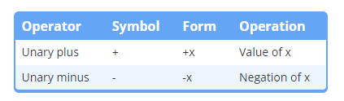
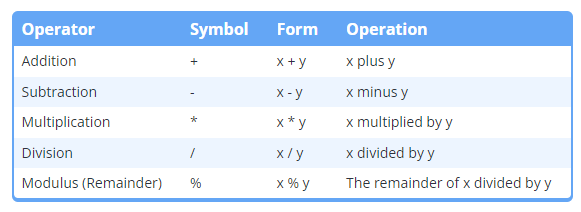
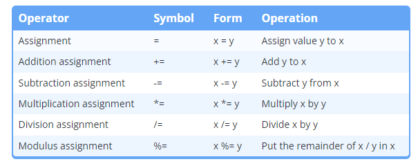
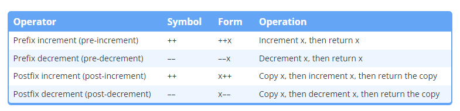
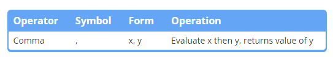
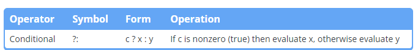
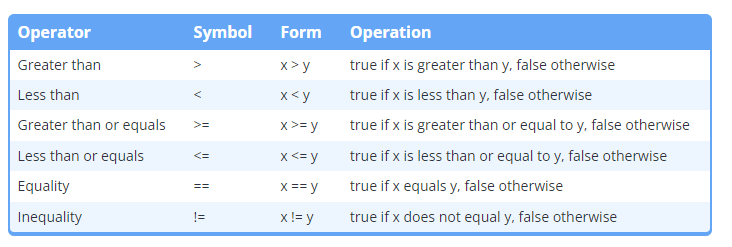

An operation is an mathematical calculation involving zero or more input values (called operand) to produce a new value. The specific operation to be performed is denoted by a construct (symbol or pair of symbols: +, -, “*”, “/”, ….) called an operator.
Operator precedence:
In the compound expression (including more than 1 operators), C++ use the rule of operator precedence. Each operator is assigned one level, the higher level operator will be evaluate first.
When the operators have the same level, C++ uses operator associativity that indicates whether the it analyzes from left-to-right or right-to-left.
We can use the pasteurization for explicitly say the order of the operator
Best practice
Use parentheses to make it clear how a non-trivial expression should evaluate (even if they are technically unnecessary).
For example
Code
x = (y + z + w); // instead of thisx = y + z + w; // it's okay to do thisx = ((y || z) && w); // instead of thisx = (y || z) && w; // it's okay to do thisx = (y *= z); // expressions with multiple assignments still benefit from parenthesis
In many cases, the operands in a compound expression may evaluate in any order. This includes function calls and the arguments to those function calls.
We can have the mistakes that the compiler chooses the order differs from what we want:
Outside of the operator precedence and associativity rules, assume that the parts of an expression could evaluate in any order. Ensure that the expressions you write are not dependent on the order of evaluation of those parts.
Example for best practice:
Code
#include <iostream>int getValue(){ std::cout <<"Enter an integer: "; int x{}; std::cin >> x; return x;}int main(){ int a{ getValue() }; int b{ getValue() }; int c{ getValue() }; std::cout << a + (b * c); return 0;}
6.2 Arithmetic operators
There are two unary arithmetic operators:

Unary Arithmetic
The binary arithmetic operators:

Binary Arithmetic
Arithmetic assignment operators

Arithmetic Assignment operators
6.3 Increment/decrements operators, and side effects

Increment/decrement operators
Let have an example:
Code
#include <iostream>int main(){ int x{ 5 }; int y{ 5 }; std::cout << x <<' '<< y <<'\n'; std::cout <<++x <<' '<<--y <<'\n'; // prefix make the calculation // and assign directly std::cout << x <<' '<< y <<'\n'; std::cout << x++<<' '<< y--<<'\n'; // postfix creates a copy, calcul, // and return the copy std::cout << x <<' '<< y <<'\n'; return 0;}
Best practice
Strongly favor the prefix version.
6.3.1 Side effects can cause undefined behavior
A function or expression is said to have a side effect if has some obervable effect beyond producing a return value.
Common examples are assignment value of objects, doing input, output,… Most of the time, side effects are useful:
Code
x =5;++x;std::cout << x
However, side effects can also lead to unexpected results:
Code
int add(int x, int y){ return x + y;}int main(){ int x{ 5 }; int value{ add(x, ++x) }; std::cout << value <<'\n'; // value depends on how the above line evaluates return 0;}
C++ does not define the order of evaluation for function arguments or the operands of operators.
Don’t use a variable that has a side effect applied to it more than once in a given statement. If you do, the result may be undefined.
6.4 Comma and conditional operators

Comma operator
The comma operator allows us to evaluate multiple expressions wherever a single expression is allowed.
In almost every case, a statement written using the comma operator would be better written as a separate statements.
Best practice
Avoid using the comma operator, except within for loops
6.4.1 Comma as a separator
In C++, comma symbol is often used as a separator, and does not invoke the comma operator:
Code
void foo(int x, int y) // Comma used to separate parameters infunction definition{add(x, y); // Comma used to separate arguments infunction call constexpr int z{ 3 }, w{ 5 }; // Comma used to separate multiple variables being defined on the same line (don't do this)}
6.4.2 Conditional operator

Conditional operator
Always parenthesize the conditional part of the conditional operator, and consider parenthesizing the whole thing as well.
6.4.2.1 The conditional operator evaluates as an expression
Because the conditional operator operands are expressions rather than statements, the conditional operator can be used in some places where if/else cannot.
The type of expressions in conditional operator must match or be convertible.
The conditional operator gives us a convenient way to compact some if/else statements. It’s most useful when we need a conditional initializer (or assignment) for a variable, or to pass a conditional value to a function.
6.5 Relational operators and floating point comparisons

Relational Operators
Comparison of calculated floating point values can be problematic.